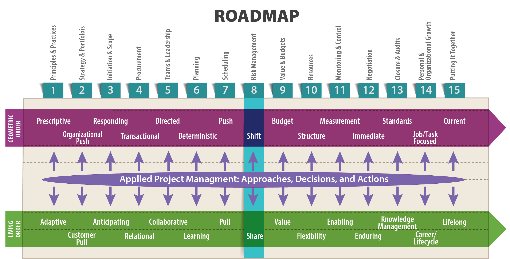
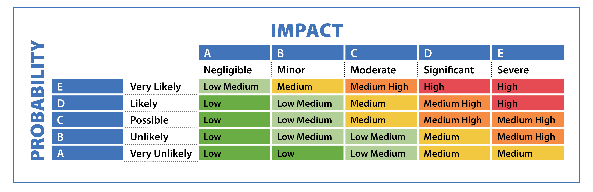

I may say that this is the greatest factor—the way in which the expedition is equipped—the way in which every difficulty is foreseen, and precautions taken for meeting or avoiding it. Victory awaits him who has everything in order—luck, people call it. Defeat is certain for him who has neglected to take the necessary precautions in time; this is called bad luck.
—Roald Amundsen, Norwegian polar explorer (The South Pole: An Account of the Norwegian Antarctic Expedition in the “Fram,” 1910-1912, 370)

Objectives
After reading this lesson, you will be able to
The Big Ideas in this Lesson
Most people use the term risk to refer to something bad that might happen, or that is unavoidable. The connotations are nearly always negative. But in fact, with risk comes opportunity and new possibility, as long as you can clearly identify the risks you face and employ reliable techniques for managing them. Risks can impact a project’s cost and schedule. They can affect the health and safety of the project team or the general public, as well as the local or global environment. They can also affect an organization’s reputation, and its larger operational objectives.
According to Larry Roth, Vice President at Arcadis and former Assistant Executive Director of the American Society of Civil Engineers, the first step toward identifying and managing risks is a precise definition of the term. He defines risk as “the probability that something bad will happen times the consequences if it does.” The likelihood of a risk being realized is typically represented as a probability value from 0 to 1, with 0 indicating that the risk does not exist, and 1 indicating that the risk is absolutely certain to occur. According to Roth, the term tolerable risk refers to the risk you are willing to live with in order to enjoy certain benefits (pers. comm., April 23, 2018).
In daily life, we make risk calculations all the time. For example, when buying a new smartphone, you are typically faced with the question of whether to insure your new device. If you irreparably damage your phone, the potential consequence is the cost of a new phone—let’s say $500. But what is the actual probability of ruining your phone? If you are going to be using your phone in your office or at home, you might think the probability is low, and so choose to forgo the insurance. In this case, a risk analysis calculation might look like this:
0.2 X $500 = $100
In other words, you might decide that the risk of damaging your phone is a tolerable risk, one you are willing to live with. The benefit you gain from tolerating that risk is holding onto the money you would otherwise have to pay for insurance.
But what might make you decide that the risk of damaging the phone was not a tolerable risk? Suppose you plan to use your phone regularly on a boat. In that case, the chance of damaging it by dropping it in the water is high, and so your calculation might look like this:
0.99 X $500 = $495
For many people, this might make insurance might seem like a good idea.
Your tolerance of risk is partly a matter of personality and attitude. This article describes a range of attitudes toward risk, ranging from “risk paranoid” to “risk addicted”: https://www.pmi.org/learning/library/risk-management-expected-value-analysis-6134.
Inexperienced project managers often make the mistake of confusing threats, issues, and risks. A threat is a potential hazard, such as dropping your phone in the water. A threat is not in itself a risk. A risk is the probability that the threat will be realized times the consequences.
On the other end of the uncertainty spectrum are issues, which are known potential problems that the project team will definitely have to keep an eye on. For example, the mere possibility of exceeding a project’s budget is not a risk. It’s a well-known issue associated with any project; part of managing the project is managing the budget. But if your particular project involves extensive use of copper wiring, then an increase in the price of copper is a direct threat to your project’s success, and the associated risk is the probability of higher copper prices times the consequences of such an increase. Team members cannot control the price of copper; it is a risk that you’ll have to respond to, making decisions in response to the changing situation.
Risk expert Carl Pritchard distinguishes between risks and issues as follows: “A risk is out there in the future, and we don’t know if it is going to happen; but if it does happen it will have an impact. Issues are risks realized. They are the risks whose time has come, so to speak” (Pritchard and Abeid 2013). That’s not to say that all issues used to be risks. And some things can be issues at an organizational level, but a risk when it comes to your particular project. Pritchard explains:
An issue in your organization may be that management changes its mind….If your management is constantly changing their minds, time and time and time again—that’s an issue. But for your particular project, they haven’t changed their mind yet. So for your project it’s still a risk. It’s a future phenomenon, because it hasn’t happened to you yet. You’re anticipating that eventually it will become an issue. But for now, at least, it’s still out there in the future. (Pritchard and Abeid 2013)
Table 8-1 compares issues, threats, and risks on different projects.
| Project | Issue | Threat | Risk |
| Developing a new cell phone | The phone must be released on schedule or consumers will consider it obsolete. | Introduction of new features in a competing product, which would necessitate adding the same feature to your product. | The probability that a competitor will introduce a new feature times the consequences in time and money required to remain competitive. |
| Constructing a sea wall | The sea wall must be resilient even if exposed to the most severe storm surge that can be anticipated given our current knowledge. | Rising sea levels caused by climate change make it hard to predict the future meaning of the words “the most severe storm surge.” | The probability of sea levels rising higher than the sea wall times the monetary and safety consequences of flooding. |
| Constructing an addition to a clinic | Cost of capital has significant impact on capital project decision-making. | The Federal Reserve raises interest rates, increasing the cost of borrowing money for the project. | The probability of rising interest rates times the increase to overall project cost if interest rates do go up. |
Table 8-1: Distinguishing between issues, threats, and risks
A quick perusal of recent articles published in Risk Management magazine hints at the vast array of risks facing modern organizations. If you were asked to generate your own list, you might include environmental disasters, financial setbacks, and data theft as obvious risks. But what about the more obscure dangers associated with patent translations or cyber extortion?
The following examines a few varieties of issues and related risks you might not have considered. Can you think of any issues and risks specific to your industry that you would add this list?
Social responsibility risks that threaten the license to operate a mining operation, risks tied to perceptions of over-consumption of water, and reputational risks linked to investments in projects with potentially damaging environmental consequences…. Additional trends in sustainability risk include risks to financial performance from volatile energy prices, compliance risks triggered by new carbon regulations, and risks from product substitution as customers switch to more sustainable alternatives. (2012)
Perhaps the hardest risks of all to prepare for are the risks that your training and professional biases prevent you from perceiving in the first place. As an engineer, you are predisposed to identify technical risks. You might not be quite as good at recognizing other types of risks. In Chapter 1 of Proactive Risk Management, Preston G. Smith and Guy M. Merritt list some risks associated with a fictitious product. The list includes marketing, sourcing, regulatory, and technical risks. In summing up, the authors point out two essential facts about the list of risks: “First, it is specific to this project and market at this point in time. Second, it goes far beyond engineering items” (2002, 2-3). Later in the book, in a chapter on implementing a risk management program, they have this to say about an engineer’s tendency to perceive only technical risks:
Good risk management is cross-functional. If engineers dominate product development, you might consider letting engineering run project risk management. This is a mistake. If you assign risk management to the engineering department and engage only engineers to identify, analyze, and plan for risks, they will place only engineering risks on their lists. (186)
The role team members play in a project can hugely affect their perception of risk. According to David Hillson, a consultant and author of many books on risk, a project sponsor (upper management or the customer) and the project manager perceive things very differently:
These two different perspectives reveal an important dichotomy in the nature of risk in the context of projects. A project manager is interested in “risks” while the sponsor wants to know about “risk.” While the project manager looks at the risks in the project, the project sponsor looks at the risk of the project. (Hillson 2009, 17-18)
Even when you think you understand a particular stakeholder’s attitude toward risk, that person’s risk tolerance can change. For example, a high-level manager’s tolerance for risk when your organization is doing well financially might be profoundly different from the same manager’s tolerance for risk in an economic downturn. Take care to monitor the risk tolerance of all project stakeholders—including yourself. Recognize that everyone’s risk tolerances can change throughout the life of the project based on a wide range of factors.
Successful project managers manage the differing perceptions of risk, and the widespread confusion about its very nature, by engaging in systematic risk management. According to the Financial Times, risk management is “the process of identifying, quantifying, and managing the risks that an organization faces” (n.d.). In reality, the whole of project management can be thought of as an exercise in risk management because all aspects of project management involve anticipating change and the risks associated with it.
The tasks specifically associated with risk management include “identifying the types of risk exposure within the company; measuring those potential risks; proposing means to hedge, insure, or mitigate some of the risks; and estimating the impact of various risks on the future earnings of the company” (Financial Times). Engineers are trained to use risk management tools like the risk matrix shown in Figure 8-1, in which the probability of the risk is multiplied by the severity of consequences if the risk does indeed materialize.

This and other risk management tools can be useful because they provide an objective framework for evaluating the seriousness of risks to your project. But any risk assessment tool can do more harm than good if it lulls you into a false sense of security, so that you make the mistake of believing you really have foreseen every possible risk that might befall your project. You don’t want to make the mistake of believing that the tools available for managing risk can ever be as precise as the tools we use for managing budgets and schedules, even as limited as those tools are.
Perhaps the most important risk management tool is your own ability to learn about the project. The more you know about a project, the better you will be at foreseeing the many ways the project could go awry and what the consequences will be if they do, and the better you will be at responding to unexpected challenges.
Different people will have different interpretations of the nature of risks associated with a company’s future earnings, depending on how broadly one defines “success” and consequently the risks that affect the likelihood of achieving success. An example of a company failing to define “success” over the long term, with tragic consequences, is the 2010 BP spill, which poured oil into the Gulf of Mexico for 87 days.
This event, now considered one of the worst human-caused disasters in history, started with a methane explosion that killed 11 workers and ultimately sank the Deepwater Horizon oil rig. After the explosion, engineers counted on a specialized valve, called a blind shear ram, to stop the flow of oil. For reasons that are still not entirely understood, the valve failed, allowing the oil to pour unchecked into the Gulf. Despite the well-known vulnerability of the blind shear ram, and the extreme difficulties of drilling at a site that tended to release “powerful ‘kicks’ of surging gas,” BP chose not to install a backup on the Deepwater Horizon.
In hindsight, that now looks like an incredibly short-sighted design and construction decision, especially considering the fact that nearly all oil rigs in the gulf are equipped with a backup blind shear ram to prevent exactly the type of disaster that occurred on the Deepwater Horizon (Barstow, et al. 2010). The well’s installation might have been considered “successful” at the time of completion if it met schedule and budget targets. However, if BP had focused more on long-term protection of the company’s reputation and success, and less on the short-term economics of a single oil rig, the world might have been spared the Deepwater Horizon catastrophe. As companies venture into ever deeper waters to drill for oil, this type of risk management calculation will become even more critical.
In traditional, geometric order thinking, risk is a hot potato contractually tossed from one party to another. In capital projects in particular, risk has traditionally been managed through aversion rather than fair allocation. Companies do everything they can to avoid suffering the consequences of uncertainty. Unfortunately, this often results in parties being saddled with risk they can’t manage or survive. As explained in an interview with John Nelson, this often means that, in capital projects, customers are unsatisfied because
conflict inherent in improper risk allocation often results in expensive and unwanted outcomes, such as numerous RFIs [Requests for Information] and change orders, redesign, delays, spiraling project costs, loss of scope to “stay in budget,” claims and disputes, a changing cast of players, poorly functioning or unmaintainable designs, unmet expectations, productivity losses, and in a worst case: lawsuits. (Allen 2007)
The essential problem with traditional risk management in capital projects is that it forces each party to
act in its own interests, not in the common interest because there is no risk-sharing that binds together the owner, architect, and constructor. In the traditional model, the owner often unintentionally presumes he will get the minimum—the lowest quality of a component, system, etc.—that all the other project parties can get away with. So, when a problem occurs, such as a delay, each party naturally acts to protect their own interests rather than look for a common answer. (Allen 2007)
The traditional approach sees risk as something bad that must be avoided as much as possible. By contrast, a living order approach sees risk as a sign of opportunity, something essential to capitalism and innovation. Rather than tossing a hot potato of risk from stakeholder to stakeholder, a living order approach seeks a more equitable, holistic form of risk-sharing, with the most risk assigned to the party best able to manage it and most likely to benefit from it. In a capital project, for instance, the owner must assume “some of the risk because at the end of the day the owner has the long-term benefit of a completed facility” (Allen 2007).
In their book Becoming a Project Leader, Laufer et al. question the usefulness of risk management calculations, positing redundancies as a better method for handling unpredictable events in projects. They point to “Zur Shapira, who asked several hundred top executives (of permanent organizations, not of projects) what they thought about risk management, [and] found they had little use for probabilities of different outcomes. They also did not find much relevance in the calculate-and-decide paradigm. Probability estimates were just too abstract for them. As for projects, which are temporary and unique endeavors, it is usually not possible to accumulate sufficient historical data to develop reliable probabilities, even when the risky situation can be clearly defined” (Shapira 1995).
Laufer et al. also point to the expertise of Brian Muirhead from NASA, who “disclosed that when his team members were asked to estimate the probability of failures, ‘many people simplistically assigned numbers to this analysis—implying a degree of accuracy that has no connection with reality’” (Muirhead 1999).
Furthermore, Gary Klein, in his analysis “The Risks of Risk Management,” concluded unequivocally, “In complex situations, we should give up the delusion of managing risk. We cannot foresee or identify risks, and we cannot manage what we can’t see or understand” (Klein 2009). It therefore behooves us to build in some redundancies so that we’re able to cope with problems that may arise (Laufer, et al. 2018).
In a report on managing the extensive risks involved in highly complex infrastructure projects, Frank Beckers and Uwe Stegemann advocate a “forward-looking risk assessment” that evaluates risk throughout the project’s entire lifecycle. The questions they raise are helpful to ask about any type of project unfolding in living order:
When thinking of risk and a project’s life cycle, it’s important to remember that many manufacturing companies, such as Boeing and John Deere, have begun focusing on making money from servicing the products they produce—putting them in the same long-term service arena as software developers. At these companies, project managers now have to adopt a greatly expanded view of a product’s life cycle to encompass, for example, the decades-long life span of a tractor. Living as we do in an era when time is constantly compressed, and projects need to be completed faster and faster, it can be hard to focus on the long-term risks associated with a product your company will have to service for many years.
All forms of business are in need of a radical rethinking of risk management. For starters, in any industry, it’s essential to collaborate on risk management early on, during project planning, design, and procurement. The more you engage all key stakeholders (e.g., partners, contractors, and customers) in the early identification of risks and appropriate mitigation strategies, the less likely you are to be blindsided later by unexpected threats.
In addition to paying attention to risk early, a good risk manager also practices proactive concurrency, which means intentionally developing an awareness of options that can be employed if things don’t work out. This doesn’t necessarily mean you need to have a distinct plan for every possible risk. But you should strive to remain aware of the potential for risk in every situation and challenge yourself to consider how you might respond.
At all times, be alert to consequences that are beyond your team’s control. Sometimes management’s definition of project success is tied to longer-term or broader outcomes, often involving things well outside the control of the project’s stakeholders. If you find yourself in that situation, do all you can to raise awareness of the consequences of a threat to the project being realized, emphasizing how they might affect the broader organization. It is then up to the senior management, who presumably has the authority and ability to influence wider aspects, to take action or make adjustments.
In product development, the most pressing risks are often schedule-related, where it is essential to get the product out to recover the initial investment and minimize the risk of obsolescence. In this environment, anything that can adversely affect the schedule is a serious risk. A less recognized product development risk is complacency: product designers become so convinced they have created the best possible product that they fail to see drawbacks that customers identify the second the product reaches the market.
This famously happened in 2010 with Apple’s iPhone 4, which tended to drop calls if the user interfered with the phone’s antenna by touching the device’s lower-left corner. At first, Apple chose to blame users, with Steve Jobs infamously advising annoyed customers, “Just avoid holding it that way” (Chamary 2016). Eventually, the company was forced to offer free plastic cases to protect the phone’s antenna, but by then the damage was done. Even die-hard Apple customers grew wary of the brand, the company’s stock price fell, and Consumer Reports announced that it could not recommend the iPhone 4 (Fowler, Sherr and Sheth 2010).
Product development firms are especially susceptible to market risks. Maintaining the power of a company’s brand is a major issue that can lead to numerous risks. One such risk is the erosion of a long-established legacy of consumer trust in a particular brand. A new, negative association (think of the Volkswagen emissions-control software scandal) can drive customers away, sabotaging the prospects for new products for years to come. Even changing a company logo presents great risks. This blog post describes redesign failures, some of which costs hundreds of millions of dollars: https://www.canny-creative.com/10-rebranding-failures-how-much-they-cost/. Another market risk is a sudden, unexpected shift in consumer preferences, as occurred in the 1990’s, when, in response to an economic downturn, consumers switched from national brand groceries to less expensive generic brand, and never switched back, even after the economy improved. These days, higher quality generic brands, such as Costco’s Kirkland brand, are big business—a development few analysts saw coming (Danziger 2017). Market risks can undermine all the good work engineers do in developing a product or service. For example, Uber engineers excelled in developing a system that employs geo-position analytics to enable vehicles, drivers, and riders to efficiently connect. However, the company failed to assess and address key market issues like rider safety, governmental approvals, and data security (Chen 2017).
In traditional product development, risk management is relegated to research and development, with marketing and other teams maintaining a hands-off approach. But as products grow more complex, this tendency to focus only on technical risks actually increases the overall risk of project failure. In the product development world, the risk of failure is increasingly dictated by when the product arrives in the marketplace, and what other products are available at that time. In other words, in product development, schedule risks can be as crucial, if not more crucial, than technical risks.
In an article adapted from his book Developing Products in Half the Time, Preston G. Smith argues, “When we view risk as an R&D issue, we naturally concentrate on technical risk. Unfortunately, this guides us into the most unfruitful areas of risk management, because most products fail to be commercially successful due to market risks, not technical risks.” Even at companies that tend to look at the big picture, “engineers will tend to revert to thinking more narrowly of just technical risk. It is management’s job to keep the perspective broad” (1999). Companies that lack the broad perspective end up piling risk on risk.
Although others may think of risk as solely a technical issue and attribute it to the R&D department, most risk issues have much broader roots than this. If you treat development risk as R&D-centric, you simply miss many risks that are likely to materialize later. If others try to place responsibility for product-development risk on R&D, they unwittingly mismanage the problem. (Smith 1999)
Smith advocates for a proactive approach to risk management in which companies identify threats early and work constantly to “drive down” the possibility of a threat actually materializing, while staying flexible on unresolved issues as long as possible. He provides some helpful risk management techniques that you can read about on pages 30-32 of this article: http://www.strategy2market.com/wp-content/uploads/2014/05/Managing-Risk-As-Product-Development-Schedules-Shrink.pdf.
The IT world faces a slew of risks related to the complexity of the products and services it provides. As a result, IT projects are notoriously susceptible to failure. In fact, a recent survey reported a failure rate of over 50% (Florentine 2016). This figure probably under reports the issue because it focuses on the success rate for IT projects in the short run—for example, whether or not developers can get their software up and running. But as software companies rely more and more on a subscription-based business model, the long-term life cycle of IT products becomes more important. Indeed, in a world where software applications require constant updates, it can seem that some IT projects never end. This in turn, raises more risks, with obsolescence an increasing concern. Add to this the difficulties of estimating in IT projects and the cascading negative effects of mistakes made upfront in designing software architecture, and you have the clear potential for risk overload.
By focusing on providing immediate value, Agile helps minimize risk in software development because the process allows stakeholders to spot problems quickly. Time is fixed (in preordained sprints), so money and scope can be adjusted. This prevents schedule overruns. If the product owner wants more software, she can decide this bit-by-bit, at the end of each sprint.
In a blog post about the risk-minimizing benefits of Agile, Robert Sfeir writes,
Agile exposes and provides the opportunity to recognize and mitigate risk early. Risk mitigation is achieved through cross-functional teams, sustainable and predictable delivery pace, continuous feedback, and good engineering practices. Transparency at all levels of an enterprise is also key. Agile tries to answer questions to determine risk in the following areas, which I will discuss in more detail in a future post:
Keep in mind that in all industries, simply identifying threats is only the first step in risk management. Lots of time and money could be lost by failing to understand probabilities and consequences, causing your team to place undue management focus on threats that have a low probability of occurrence, or that may have minimal impact.
One way to manage risk is to monetize it. This makes sense because risk usually manifests itself as additional costs. If a project takes longer than expected or requires additional resources, costs go up. Thus, to fully understand the impact of the risks facing a particular project, you may need to assign a dollar value to (that is, monetize) the potential impact of each risk. Monetizing risks gives outcomes “real economic value when the effects might otherwise be ignored” (Viscusi 2005). Once you’ve monetized a project’s risks, you can rank them and make decisions about which deserves your most urgent attention. Every industry has its own calculations for monetizing risks. For example, this article includes a formula for monetizing risks to networks and data: http://www.csoonline.com/article/2903740/metrics-budgets/a-guide-to-monetizing-risks-for-security-spending-decisions.html.
Keep in mind that monetizing certain risks is controversial. In some instances, it is acceptable or even required. One example is the value of a statistical life, which is “an estimate of the amount of money the public is willing to spend to reduce risk enough to save one life.” The law requires U.S. government agencies to use this concept in “a cost-benefit analysis for every regulation expected to cost $100 million or more in a year” (Craven McGinty 2016).
In other circumstances, most notably in product safety, it is clearly unethical to make a decision based strictly on monetary values. An example of this is the famous decision by Ford Motor Company in the early 1970’s to forgo a design change that would have required retooling the assembly line to reduce the risk of death and injury from rear impacts to the Ford Pinto car. The company’s managers made this decision based on a cost-benefit analysis that determined it would be cheaper to go ahead and produce the faulty car as originally designed, and then make payments as necessary when the company would, inevitably, be sued by the families of people killed and injured in the cars. Public outrage over this decision and the 900 deaths and injuries caused by the Pinto’s faulty fuel tank clearly demonstrated the need for product safety design decisions to be based on broader considerations than a simple tradeoff analysis based on the cost of improved design versus an assigned value for the value of lives saved.
Every well-run organization has its own process for reporting on threats as a project unfolds. In some projects, a weekly status report with lists of threats color-coded by significance is useful. In others, a daily update might be necessary. In complicated projects, a project dashboard, as described in Lesson 11, is essential for making vital data visible for all concerned.
The type of contract binding stakeholders can affect everyone’s willingness to share their concerns about risk. In capital projects, the traditional design/bid/build arrangement tends to create an adversarial relationship among stakeholders. As David Thomack, Chief Operating Officer at Suffolk Construction, explained in a lecture on Lean and project delivery, this type of arrangement forces stakeholders to take on adversarial roles to protect themselves from blame if something goes wrong (2018). This limits the possibilities for sharing information, making it hard to take a proactive approach to project threats, which would in turn minimize risk throughout the project. Instead, stakeholders are forced to react to threats as they arise, an approach that results in higher costs and delayed schedules. By contrast, a more Lean-oriented contractual arrangement like Integrated Project Delivery, which emphasizes collaboration among all participants from the very earliest stages of the project, encourages participants to help solve each other’s problems, taking a proactive approach to risk (2018). In this environment, it’s in everyone’s best interests to openly acknowledge risks and look for ways to mitigate them before they can affect the project’s outcome.
Whatever process your organization and contract arrangement requires, keep in mind that informing stakeholders or upper management about a threat is meaningless if you do it in a way they can’t understand, or if you don’t clarify exactly how urgent you perceive the risk to be. When deciding what to include in a report, think about what you expect your audience to be able to do with the information you provide. And remember to follow up, making sure your warning has been attended to.
As a project manager, you should focus on 1) clearly identifying risks, taking care not to confuse project issues with risks, and 2) clearly reporting the status of those risks to all stakeholders. If you are reporting on risks that can affect the health and safety of others, you have an extra duty to make sure those risks are understood and mitigated when necessary.
Here are two helpful articles with advice on managing and reporting project risks:
If, as a risk manager, you spend all your time on a small circle of potential risks, you will fail to identify threats that could, in the long run, present much greater risks. And then there’s the challenge of calculating the cost of multiple risks materializing at the same time, i.e., a perfect storm of multiple, critical risks materializing simultaneously. In such a situation, calculating risks is rarely as simple as summing up the total cost of all the risks. In other words, you need to keep the big picture in mind. And when it comes to risk, the big picture is nearly always bigger than you think it is.
Nassim Nicholas Taleb has written extensively about the challenges of living and working in a world where we don’t know—indeed can’t ever know—all the facts. In his book Black Swan: The Impact of the Highly Improbable, he introduces his theory of the most extreme form of externality, which he calls a black swan event. According to Taleb, a black swan event has the following characteristics: First, it is an outlier, as it lies outside the realm of regular expectations, because nothing in the past can convincingly point to its possibility. Second, it carries an extreme impact. Third, in spite of its outlier status, human nature makes us concoct explanations for its occurrence after the fact, making it explainable and predictable (2010, xxii) .
He argues that it is nearly impossible to predict the general trend of history, because history-altering black swan events are impossible to predict:
A small number of Black Swans explain almost everything in our world, from the success of ideas and religions, to the dynamics of historical events, to elements of our own personal lives. Ever since we left the Pleistocene, some ten millennia ago, the effect of these Black Swans has been increasing. It started accelerating during the industrial revolution, as the world started getting more complicated, while ordinary events, the ones we study and discuss and try to predict from reading the newspapers, have become increasingly inconsequential.
Just imagine how little your understanding of the world on the eve of the events of 1914 would have helped you guess what was to happen next. (Don’t cheat by using the explanations drilled into your cranium by your dull high school teacher). How about the rise of Hitler and the subsequent war?… How about the spread of the Internet?… Fads, epidemics, fashion, ideas, the emergence of art genres and schools. All follow these Black Swan dynamics. Literally, just about everything of significance around you might qualify. (2010, xxii)
One of Taleb’s most compelling points is that these supposedly rare events are becoming less rare every day, as our world grows more complicated and interconnected. While you, by definition, can’t expect to foresee black swan events that might affect your projects, you should at least strive to remain aware that the most unlikely event in the world could in fact happen on your watch.
As a thought experiment designed to expand your appreciation for the role of randomness and luck in modern life, Taleb suggests that you examine your own experience:
Count the significant events, the technological changes, and the inventions that have taken place in our environment since you were born and compare them to what was expected before their advent. How many of them came on a schedule? Look into your own personal life, to your choice of profession, say, or meeting your mate … your sudden enrichment or impoverishment. How often did these things occur according to plan? (2010, xiii)
The goal of this line of thinking is not to induce paralysis over the many ways your plans can go awry, but to encourage you to keep your mind open to all the possibilities, both positive and negative, in any situation. In other words, you need to accept the uncertainty inherent in living order. That, in turn, will make you a better risk manager because you will be less inclined to believe in the certainty of your plans.
Keep in mind that engineers, especially early-career engineers, tend to be uncomfortable with uncertainty and ambiguity. They’re trained to seek clarity in all things, which is a good thing. But they also need to accept ambiguity and uncertainty as part of living order. Strive to develop the ability to assess, decide, observe, and adjust constantly throughout the life of a project and your career.
Contingency planning is the development of alternative plans that can be deployed if certain threats are realized (e.g., parts from a supplier do not meet quality requirements). Not all types of risk involve unexpected costs. Some are more a matter of having a Plan B in your back pocket to help you deal with a risk that becomes a reality. For example, if you are working with a virtual team scattered across the globe, one risk is that team members will not be able to communicate reliably during weekly status meetings. In that case, the project manager would be wise to have a contingency plan that specifies an alternative mode of communication if, for instance, a Skype connection is not functioning as expected.
However, for most risks, contingency planning comes down to setting aside money—a contingency fund—to cover unexpected costs. As discussed in Lesson 6, on small projects of limited complexity, a contingency fund consisting of a fixed percentage of the overall budget will cover most risks. But if you are working on expensive, complex projects, you will probably be required to use models generated by specialized risk analysis software. Such tools can help you determine what risks you need to or can afford to plan for. They do a lot of the number crunching for you, but still require some expert knowledge and the intelligence to enter appropriate inputs. You need to avoid the trap of accepting the outputs uncritically just because you assume the inputs were valid in the first place.
To analyze risks related to costs, organizations often turn to Monte Carlo simulations, a type of probabilistic modeling that aggregates “a series of distributions of elements into a distribution of the whole” (Merrow 2011, 324). That is, the simulation aggregates a range of high and low values for various costs. For example, when generating a Monte Carlo simulation, a project team might look at the cost of labor, assigning “an amount above and below the estimated value. The distribution might incorporate risk around both changes (increases) in hourly cost and productivity” (Merrow 2011, 324). Keep in mind that Monte Carlo simulations, like other types of probabilistic risk modeling, are only useful if their underlying assumptions are accurate. To learn more about Monte Carlo simulations, see this helpful explanation: http://news.mit.edu/2010/exp-monte-carlo-0517.
No matter what approach you take, the most valuable part of any contingency planning is the thinking that goes into the calculation, rather than any particular number generated by the calculation. Thinking carefully about the risks facing your project, and discussing them with others, is the best way to identify the areas of uncertainty in the project plan. This is why simple percentages or even Monte Carlo calculations may be counter-productive—they might encourage you to defer to a set rule or a program to do the thinking for you.
According to Larry Roth, the fundamental risk calculation—the probability of a threat materializing times the consequences if it does—should guide your thinking about contingency planning. If both the probability and consequences of a particular threat are small, then it’s probably is not worth developing a full-blown contingency plan to deal with it. But if the probability or consequences are high, then a formal contingency plan is a good idea (pers. comm., April 23, 2018).
Engineering and ethics have been in the news a great deal in recent years, in stories about the BP oil spill, the Volkswagen emissions-control software scandal, and the General Motors ignitions switch recall. These stories remind us that decisions about risk inevitably raise ethical questions because the person making the decision is often not the one who will actually suffer the consequences of failure. At the same time, unethical behavior is itself a risk, opening an organization to lawsuits, loss of insurance coverage, poor employee morale (which can lead to more unethical behavior), and diminished market share, just to name a few potentially crippling problems.
An article on the website for the International Risk Management Institute explains the link between risk management and ethics as essentially a matter of respect:
Ethics gives guidelines for appropriate actions between persons and groups in given situations—actions that are appropriate because they show respect for others’ rights and privileges, actions that safeguard others from embarrassment or other harm, or actions that empower others with freedom to act independently. Risk management is based on respect for others’ rights and freedoms: rights to be safe from preventable danger or harm, freedoms to act as they choose without undue restrictions.
Both ethics and risk management foster respect for others, be they neighbors, employees, customers, fellow users of a good or service, or simply fellow occupants of our planet—all sharing the same rights to be safe, independent, and hopefully happy and productive. Respect for others, whoever they may be, inseparably links risk management and ethics. (Head 2005)
Why do people behave unethically? That’s a complicated, interesting question—so interesting, in fact, that it has been the motivation for a great deal of human art over many centuries, from Old Testament stories of errant kings to Shakespeare’s histories to modern TV classics like The Sopranos. In the following sections, we’ll explore some factors that affect the ethical decision-making of the average person.
But first, it’s helpful to remember that not everyone is average. Some people are, at heart, deeply unethical. Scientists estimate that 4% of the human population are psychopaths (also called sociopaths)—meaning they have no empathy and no conscience, have no concept of personal responsibility, and excel at hiding the fact that their “psychological makeup is radically different” from most people (Stout 2005, 1). If you find yourself dealing with someone who constantly confounds your sense of right and wrong, consider the possibility that you are dealing with a psychopath. The books The Sociopath Next Door, by Martha Stout, and Sharks in Suits: When Psychopaths Go to Work, by Paul Babiak, offer ideas on how to deal with people who specialize in bad behavior.
Sometimes, the upper managers of an organization behave, collectively, as if they have no empathy or conscience. They set a tone at the top of the organizational pyramid that makes their underlings think bad behavior is acceptable, or at least that it will not be punished. For example, the CEO of Volkswagen said he didn’t know his company was cheating on diesel engines emission tests. Likewise, the CEO of Wells Fargo said he didn’t know his employees were creating fake accounts in order to meet pressing quotas. One can argue whether or not they should have known, but it’s clear that, at the very least, they created a culture that not only allowed cheating, but rewarded it. Sometimes the answer is to decentralize power, in hopes of developing a more open, more ethical decision-making system. But as Volkswagen is currently discovering as they attempt to decentralize their command-and-control structure, organizations have a way of resisting this kind of change (Cremer 2017).
Still, change begins with the individual. The best way to cultivate ethical behavior is to take some time regularly to think about the nature of ethical behavior and the factors that can thwart it. Let’s start with the question of personal values.
Since ancient times, philosophers have wrestled with questions about ethics and morality. How should we behave? If people know the right thing to do, can we count on them to do it? Does behaving ethically automatically lead to happiness? Do the consequences of an action determine if it was ethical, or can an action be ethical or unethical in its own right?
For example, one study looked at the factors that might cause people to report on their colleagues’ behavior, as Edward Snowden did when he released top secret documents regarding National Security Agency surveillance practices. Is whistle-blowing an act of heroism or betrayal? According to researchers Adam Waytz, James Dungan, and Liane Young, your answer to that question depends on whether you value loyalty more than fairness, or fairness more than loyalty. And which you value more depends at least in part on context. In the study, people who were asked to write about the importance of fairness were then more likely to act as whistle-blowers when faced with evidence of unethical behavior. Meanwhile, people who were asked to write about the importance of loyalty were less likely to act as whistle-blowers, presumably because they had been primed by the writing exercise to value loyalty to the group above all else. In a New York Times article about their study, the researchers conclude,
This does not mean that a five-minute writing task will cause government contractors to leak confidential information. But our studies suggest that if, for instance, you want to encourage whistle-blowing, you might emphasize fairness in mission statements, codes of ethics, honor codes or even ad campaigns. And to sway those who prize loyalty at all costs, you could reframe whistle-blowing, as many have done in discussing Mr. Snowden’s case, as an act of “larger loyalty” to the greater good. In this way, our moral values need not conflict. (Waytz, Dungan and Young 2013)
Other examples of our perceptions of right and wrong that will continue to challenge us for the foreseeable future include:
At some point, you might find that your personal values conflict with the goals of your organization or project. In that case, you should discuss the situation with colleagues who have experience with similar situations. You should also consult the Code of Ethics for Engineers, published by the National Society of Professional Engineers, which is available here: https://www.nspe.org/sites/default/files/resources/pdfs/Ethics/CodeofEthics/Code-2007-July.pdf.
The structure of an organization can also affect ethical decision-making, often in profound ways. In Team of Teams: New Rules of Engagement for a Complex World, General Stanley McChrystal and his coauthors describe the case of the faulty ignition switch General Motors used in the Chevy Cobalt and Pontiac G5. The failure of these switches killed thirteen people, most of them teenagers whose parents had bought the cars because they thought the Cobalt and G5 were safe though inexpensive vehicles. “What the public found most shocking, however, was not the existence of the ignition switch issue or even the age of its victims, but the time it had taken GM to address the problem” (2015, 188). Ten years elapsed between the first customer complaint and GM’s first attempt to solve the deadly problem. In the public imagination, GM emerged as negligent at best. However, according to McChrystal et al., the reality “was more complex. What seemed like a cold calculation to privilege profits over young lives was also an example of institutional ignorance that had as much to do with management as it did with values. It was a perfect and tragic case study of the consequences of information silos and internal mistrust” (2015, 188).
The company was “riddled with a lack of contextual awareness and trust” that prevented individuals from recognizing and acting on the failed ignition switch. The problem, for which there was an easy and inexpensive solution, floated from committee to committee at GM, because the segregated information silos prevented people from grasping its true nature. “It would take a decade of demonstrated road failures and tragedies before the organization connected the dots” (2015, 192). McChrystal and his coauthors conclude that “GM’s byzantine organizational structure meant that nobody—venal or kindly—had the information” required to make the calculations that would have revealed the flaws in the ignition switch (2015, 193).
As the GM example and countless others demonstrate, the consequences of unethical behavior can be catastrophic to customers and the general public. It can also pose an enormous risk to the company itself, with overwhelming financial implications. In the long run, being ethical is simply good business practice and the responsibility of professional engineers.
Because context can more powerfully motivate personal behavior than reason and principle, every organization should
Ultimately, ethical behavior is not just a matter of individual choices, but an ongoing process of discussion and engagement with questions of right and wrong.
Allen, Jonathan. 2007. “One Big Idea for Construction Delivery: Risk Realignment, Implementing New Tools for Process Change and Big Financial Rewards.” Tradeline. https://www.tradelineinc.com/reports/2007-9/one-big-idea-construction-delivery-risk-realignment.
Amundsen, Roald. 1913. The South Pole: An Account of the Norwegian Antarctic Expedition in the “Fram,” 1910-1912. Translated by A.G. Chater. Vol. 1. 2 vols. New York: Lee Keedick. Accessed July 12, 2016. https://books.google.com/books?id=XDYNAAAAIAAJ.
Barstow, David, Laura Dodd, James Glanz, Stephanie Saul, and Ian Urbina. 2010. “Regulators Failed to Address Risks in Oil Rig Fail-Safe Device.” The New York Times, June 20. http://www.nytimes.com/2010/06/21/us/21blowout.html?pagewanted=all.
Beckers, Frank, and Uwe Stegemann. 2013. “A risk-management approach to a successful infrastructure project.” McKinsey & Company. November. https://www.mckinsey.com/industries/capital-projects-and-infrastructure/our-insights/a-risk-management-approach-to-a-successful-infrastructure-project.
Brill, Steven. 2014. “Code Red.” Time, February: 26-36. http://content.time.com/time/subscriber/article/0,33009,2166770-1,00.html. .
Broadleaf. 2016. “Complexity and project risk.” Broadleaf. January. http://broadleaf.com.au/resource-material/complexity-and-project-risk/.
Chamary, JV. 2016. “Apple Didn’t Learn From The iPhone Antennagate Scandal.” Forbes, October 31. https://www.forbes.com/sites/jvchamary/2016/10/31/iphone-antenna-performance/#454ef19e604d.
Chen, Brian X. 2017. “The Biggest Tech Failures and Successes of 2017.” The New York Times, December 13. https://www.nytimes.com/2017/12/13/technology/personaltech/the-biggest-tech-failures-and-successes-of-2017.html.
Craven McGinty, Jo. 2016. “Why the Government Puts a Dollar Value on Life.” The Wall Street Journal, March 25.
Cremer, Andreas. 2017. “CEO says changing VW culture proving tougher than expected.” Reuters. May 22. https://www.reuters.com/article/us-volkswagen-emissions-culture/ceo-says-changing-vw-culture-proving-tougher-than-expected-idUSKBN18I2V3.
Danziger, Pamela N. 2017. “Growth in Store Brands and Private Label: It’s not about Price but Experience.” Forbes, July 28. https://www.forbes.com/sites/pamdanziger/2017/07/28/growth-in-store-brands-and-private-label-its-not-about-price-but-experience/#3f53504a505f.
DBP Management. 2014. “5 Ways to Manage Risk.” DBP Management. July 4. http://www.dbpmanagement.com/15/5-ways-to-manage-risk.
Financial Times. n.d. “Risk Management.” Financial Times Lexicon. Accessed July 15, 2018. http://lexicon.ft.com.
Florentine, Sharon. 2016. “More than Half of IT Projects Still Failing.” CIO, May 11. https://www.cio.com/article/3068502/project-management/more-than-half-of-it-projects-still-failing.html.
Fowler, Geoffrey A., Ian Sherr, and Niraj Sheth. 2010. “A Defiant Steve Jobs Confronts ‘Antennagate’.” Wall Street Journal, July 16. https://www.wsj.com/articles/SB10001424052748704913304575371131458273498.
Fox, Justin. 2014. “Instinct Can Beat Analytical Thinking.” Harvard Business Review, June 20. https://hbr.org/2014/06/instinct-can-beat-analytical-thinking.
Goldstein, Amy. 2016. “HHS failed to heed many warnings that HealthCare.gov was in trouble.” Washington Post, February 23. https://www.washingtonpost.com/national/health-science/hhs-failed-to-heed-many-warnings-that-healthcaregov-was-in-trouble/2016/02/22/dd344e7c-d67e-11e5-9823-02b905009f99_story.html?utm_term=.c2c2cd91ee68.
Head, George L. 2005. “Expert Commentary: Why Link Risk Management and Ethics?” IRMI. February 4. http://www.irmi.com/articles/expert-commentary/why-link-risk-management-and-ethics.
Hillson, David. 2009. Managing Risk in Projects. Burlington: Gower Publishing Limited.
Klein , Gary. 2009. Streetlights and Shadows: Searching for the Keys to Adaptive Decision Making. Cambridge, MA: MIT Press.
Laufer, Alexander, Terry Little, Jeffrey Russell, and Bruce Maas. 2018. Becoming a Project Leader: Blending Planning, Agility, Resilience, and Collaboration to Deliver Successful Projects. New York: Palgrave Macmillan.
Lee, Se Young. 2016. “Samsung scraps Galaxy Note 7 over fire concerns.” Reuters, October 10. https://www.reuters.com/article/us-samsung-elec-smartphones/samsung-scraps-galaxy-note-7-over-fire-concerns-idUSKCN12A2JH.
Lowers & Associates. 2013. “The Risk Management Blog.” Lowers Risk. August 8. http://blog.lowersrisk.com/human-capital-risk/.
Marshall, Aarian. 2018. “Ford Finally Makes Its Move Into Electric Cars.” Wired, January 17. https://www.wired.com/story/ford-electric-cars-plan-mach-1-suv/.
Martinez, Michael. 2016. “Ford unveils10-year plan to transform Dearborn campus.” The Detroit News, April 12. https://www.detroitnews.com/story/business/autos/ford/2016/04/12/ford-transform-campus/82935594/.
McChrystal, General Stanley, Tantum Collins, David Silverman, and Chris Fussell. 2015. Team of Teams: New Rules of Engagement for a Complex World. New York: Penguin Publishing Group.
Merrow, Edward W. 2011. Industrial Megaprojects: Concepts, Strategies, and Practices for Success. Hoboken, New Jersey: John Wiley & Sons, Inc.
Muirhead, Brian and William L. Simon. 1999. High Velocity Leadership: The Mars Pathfinder Approach to Faster, Better, Cheaper. New York, NY: Harper Business.
Pritchard, Carl, and Cesar Abeid. 2013. “006 Risk Management and the Secret Sauce of Carl Pritchard, podcast audio.” PM for the Masses. August 15. http://pmforthemasses.com/risk-management-carl-pritchard/.
Ram, Jiwat. 2016. “Compliance Projects: Fragile, Please Handle with Care!” projectmanagement.com. November 7. https://www.projectmanagement.com/articles/351236/Compliance-Projects–Fragile–Please-Handle-with-Care-.
SCDigest Editorial Staff. 2012. “Global Supply Chain News: Toyota Taking Massive Effort to Reduce Its Supply Chain Risk in Japan.” Supply Chain Digest. http://www.scdigest.com/ontarget/12-03-07-2.php?cid=5576.
Sfeir, Robert. 2015. “Agile is About Risk Mitigation.” Leading Agile. March 12. https://www.leadingagile.com/2015/03/agile-is-risk-mitigation/.
Shapira, Zur. 1995. Risk Taking: A Managerial Perspective. New York, NY: Russell Sage Foundation.
Smith, Preston G. 1999. “Managing Risk as Product Development Schedules Shrink.” Strategy2market.com. September-October. http://www.strategy2market.com/wp-content/uploads/2014/05/Managing-Risk-As-Product-Development-Schedules-Shrink.pdf.
Smith, Preston G., and Guy M. Merritt. 2002. Proactive Risk Management. New York: Productivity Press. http://www.petronet.ir/documents/10180/2323250/proactive_risk_management.
Stout, Martha. 2005. The Sociopath Next Door. New York: Broadway Books.
Taleb, Nassim Nicholas. 2010. The Black Swan: The Impact of the Highly Improbable. New York: Random House.
The Economic Times. n.d. “Definition of ‘Monte Carlo Simulation’.” The Economic Times Glossary. Accessed 15 2018, July. https://economictimes.indiatimes.com/definition/monte-carlo-simulation.
Thomack, David. 2018. “Introduction to Lean and Project Delivery.” Video Lecture for CEE 498: Construction Management. University of Wisconsin-Madison, College of Engineering, April 20.
Viscusi, W. Kip. 2005. “Monetizing the Benefits of Risk and Environmental Regulation.” Fordham Urban Law Journal 33 (4): 101-142. http://ir.lawnet.fordham.edu/cgi/viewcontent.cgi?article=2199&context=ulj.
Waytz, Adam, James Dungan, and Liane Young. 2013. “The Whistle-Blower’s Quandary.” New York Times, August 2. Accessed October 5, 2015. http://www.nytimes.com/2013/08/04/opinion/sunday/the-whistle-blowers-quandary.html.
Wilbury Stratton. 2012. “Sustainability Risks and Opportunities Report.” January. https://www2.deloitte.com/content/dam/Deloitte/in/Documents/risk/Board%20of%20Directors/in-gc-sustainability-risks-and-opportunities-report-noexp.pdf.